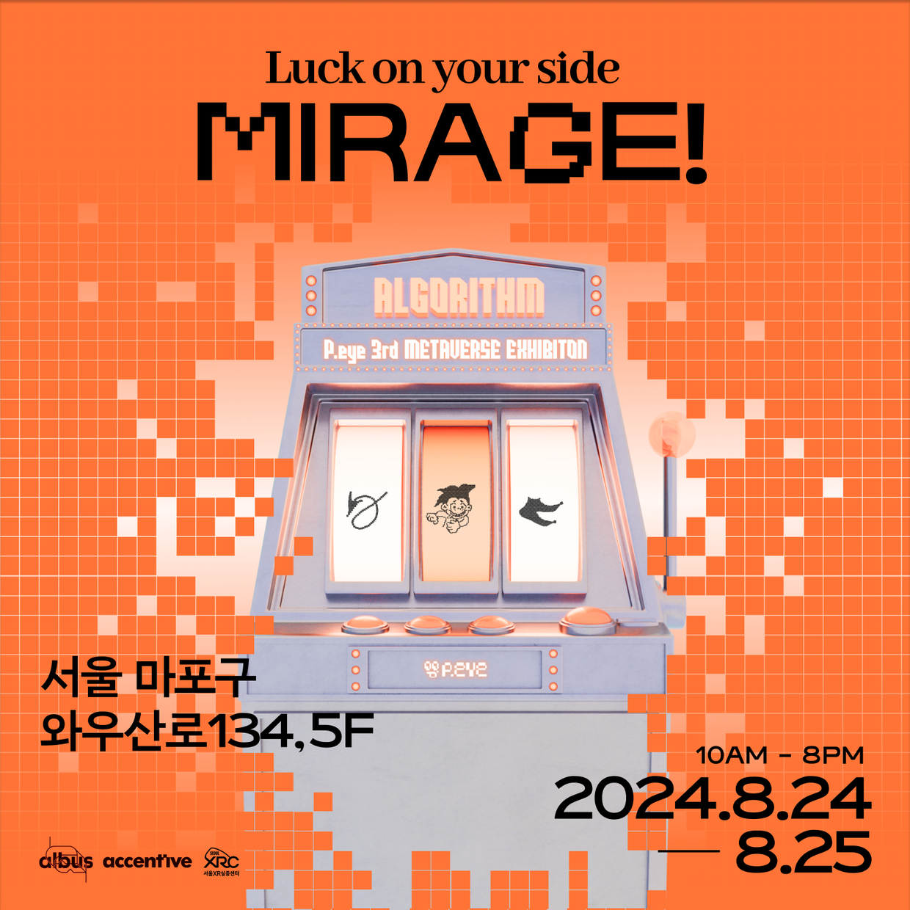

Mirage : 정보의 홍수, 혼란의 사회
P.eye는 정보의 홍수 속 편향적으로 변해버린 사회의 모습과 이로 인해 부족해진 우리의 사회적 감수성의 문제점을 해당 전시를 통해 짚어보고자 했습니다. 시대에 필요한 질문을 '디지털 아트', 그중에서도 XR이라는 기술적 매체를 통해 효과적으로 전달하고자 합니다. 단순히 눈이 즐거운 전시가 아니라 새로운 경험과 삶에 의미 있는 질문을 가지고 나가실 수 있는 전시를 선사하고자 합니다. 전시를 통해 넘치는 정보에 대한 피로감과 편향적인 사회 무리의 모습에서 나오는 문제를 생각해 보고 이를 모든 관람객과 의견을 나눠볼 수 있도록 준비한 전시입니다.